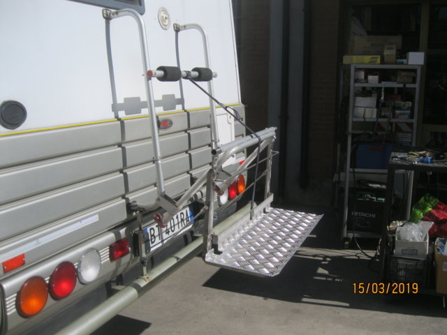
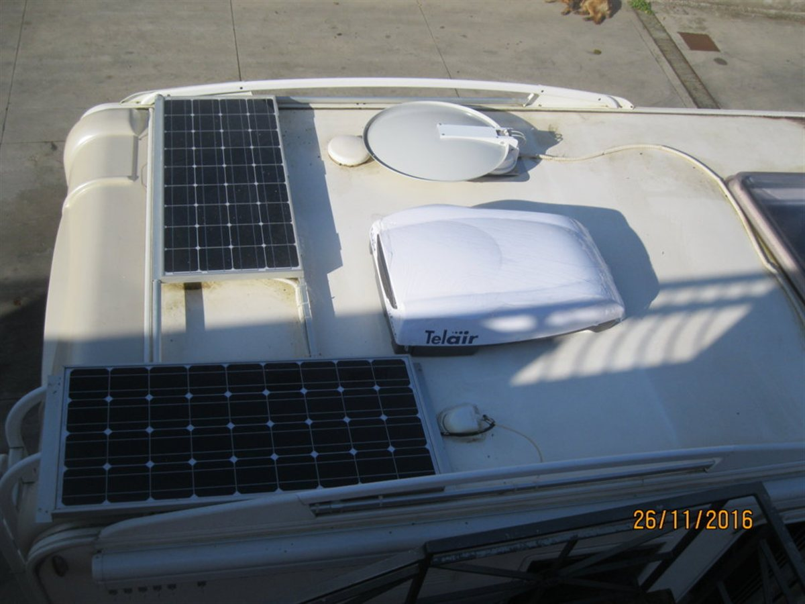
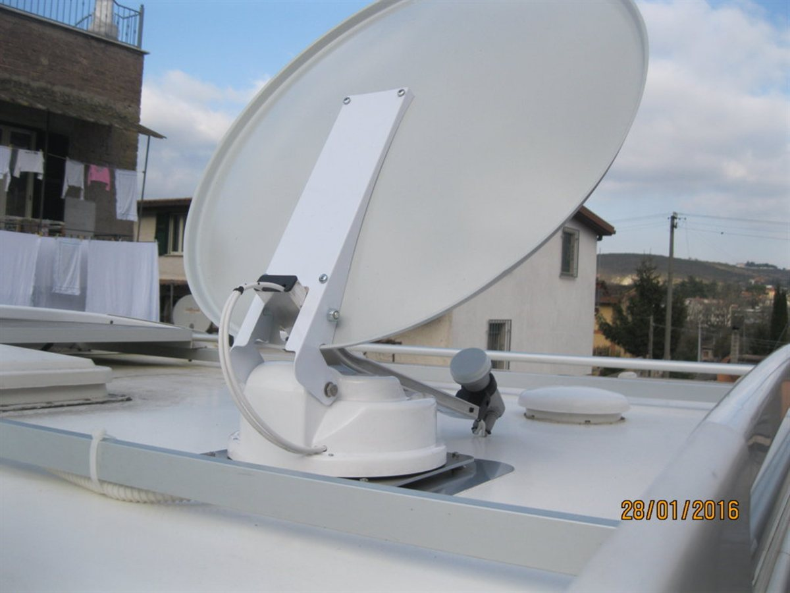
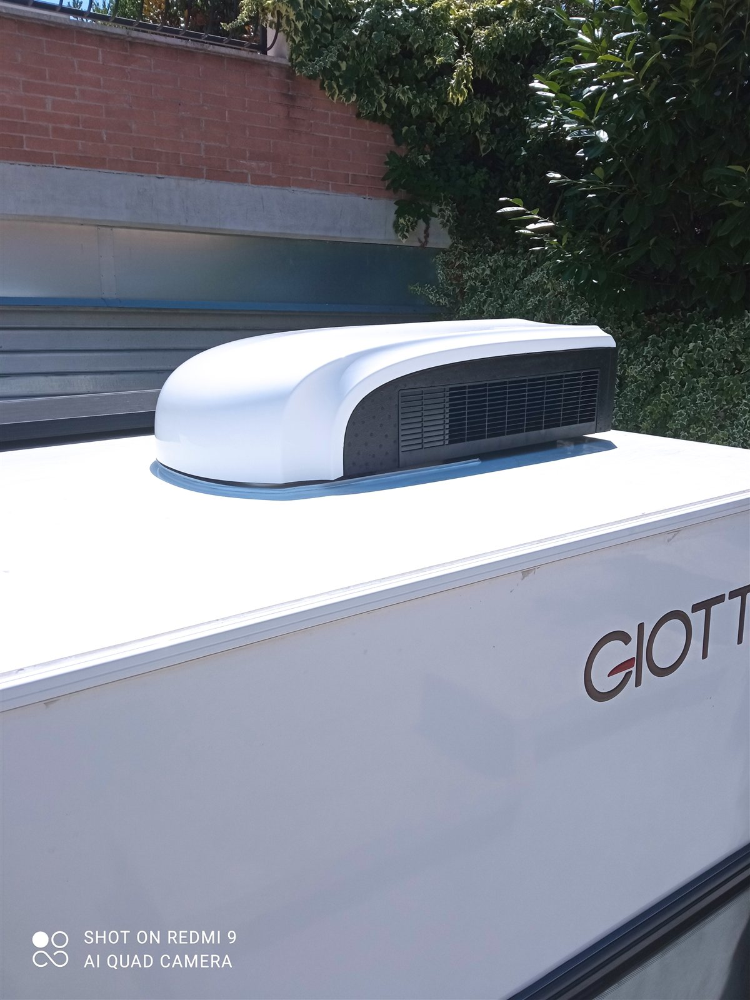
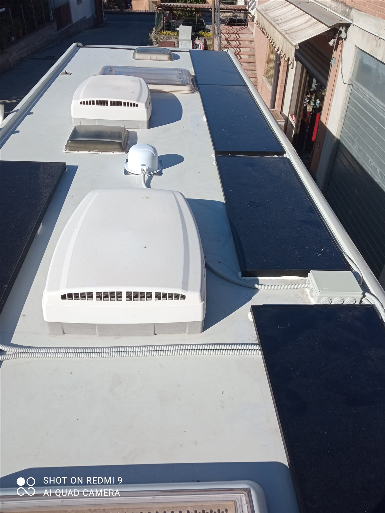
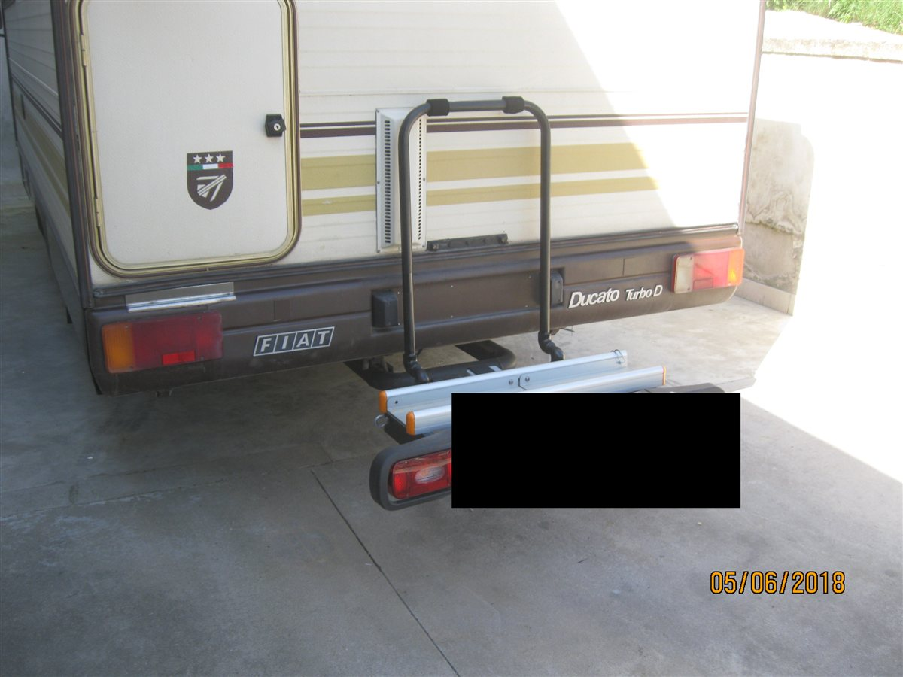
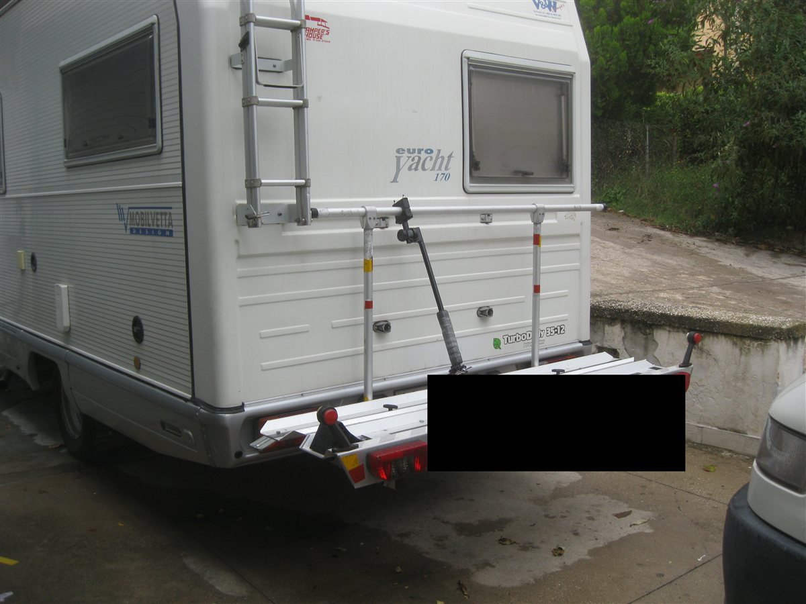
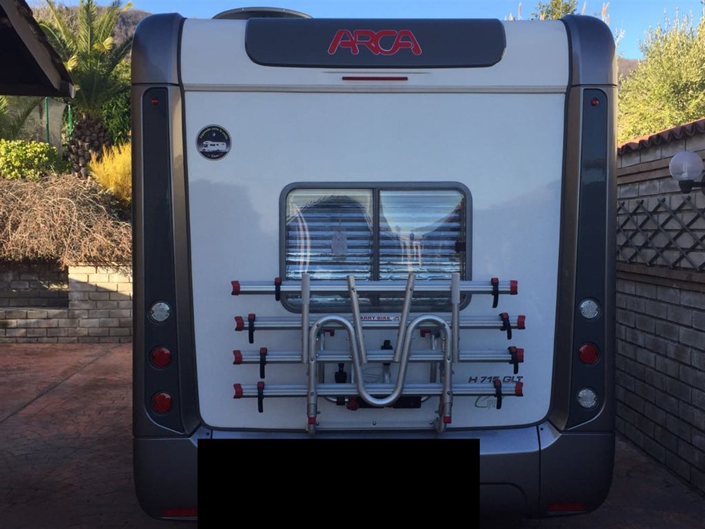
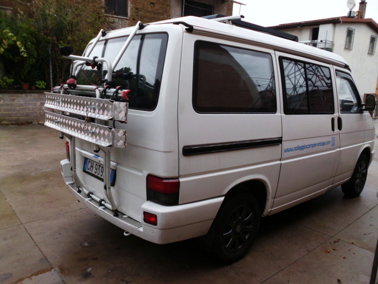
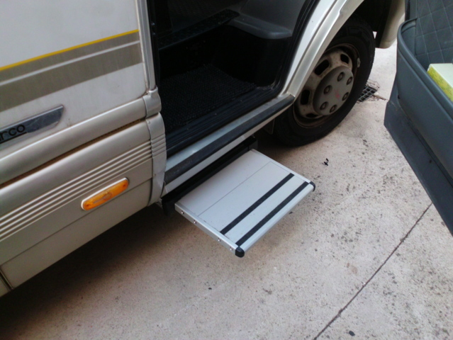

Manutenzione Camper
Controlli e messa in sicurezza
Controlli periodici, verifica di impianti e componenti, messa a punto pre e post viaggio. Interveniamo per mantenere il tuo camper sempre pronto a partire.
Richiedi un interventoManutenzione, impianti, installazione e riparazioni a Tivoli.

Pedana motorizzata montata sul gancio posteriore, su richiesta del cliente: permette di caricare e scaricare la carrozzina in autonomia.
Controlli periodici, verifica di impianti e componenti, messa a punto pre e post viaggio. Interveniamo per mantenere il tuo camper sempre pronto a partire.
Richiedi un interventoRealizzazione e modifica di impianti elettrici, idraulici e a gas, sempre a norma. Dalla semplice aggiunta di una presa a schemi di impianto completi.
Richiedi un preventivo

Pannelli solari, antenne, tendalini, portabici e ogni accessorio acquistato nel nostro shop: lo installiamo e lo colleghiamo nel nostro centro tecnico, con collaudo incluso.
Vai allo shopDue pannelli solari e un'antenna satellitare motorizzata, installati e collegati sul tetto di un camper insieme al climatizzatore: ogni accessorio integrato e collaudato nel nostro centro tecnico.


Un climatizzatore da tetto e quattro pannelli solari rigidi, installati e collegati nel nostro centro tecnico su un altro camper.


Portabici e portamoto installati sul gancio traino, da un camper d'epoca ai modelli più recenti: montaggio solido, pronto a portare bici e moto in ogni viaggio.




Gradino elettrico installato accanto alla porta d'ingresso: si estrae da solo all'apertura, per salire e scendere dal camper in sicurezza.

Ripariamo danni a carrozzeria, telaio e componenti tecnici del camper, con la stessa cura e precisione delle nostre lavorazioni su lamiera.
Richiedi un preventivo
Raccontaci cosa ti serve: rispondiamo con un preventivo entro 24 ore.
Contattaci